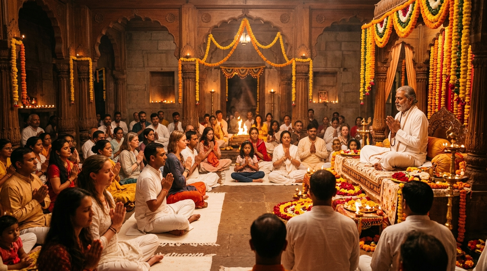

Select Your Revered Guru.
Enter Their Sacred Digital Sanctuary.
Choose an enlightened spiritual master to enter their dedicated sanctuary: guided meditation, mindfulness, devotional kirtan, Upanishadic discourses, and upcoming ashram gatherings.
Discover Gurus: Explore Lineage Masters & Follow
Explore and follow authentic spiritual masters across Vedic, Bhakti, and Meditation lineages. Choose a master to enter their dedicated sanctuary.
Acharya Vedantacharya
Digital Ashram Sanctuary
"You are not the restless mind. You are the eternal stillness witnessing the thoughts."
Spiritual Content: Discourses, Videos, Audio & Recorded Satsang
Watch and listen to spiritual discourses, guided sessions, audio podcasts, and recorded satsangs in one place with background audio mode.
Background Audio Mode Enabled
Listen with screen locked or while multi-tasking without interruption. Pure sacred vani and tranquil meditation.
Satsang & Retreat Booking: Events Details & Instant QR Tickets
Explore event schedules, reserve sacred retreat seats, and access verified digital gate passes instantly.
🎟️ Your Active Retreat Passes
1 Pass ActiveDaily Sadhana Tracker: Meditation, Chanting & Spiritual Practice
Track your daily meditation, mantra chanting, and spiritual practices: 108 Japa Mala, 4-4-4-4 Box Breathing, and Swadhyaya reflection journal.
Interactive 108 Japa Mala
Tip: Tap anywhere on the bead button or press Spacebar to advance beads.
Pranayama & Dhyana Visualizer
Swadhyaya (Daily Reflection Journal)
"What attachment or anxious thought did you surrender to the divine today?"
Lifelong Sadhana Streak
"Abhyasena tu kaunteya vairagyena cha grihyate." — Bhagavad Gita
Guru Connection & Seva: Updates, Live Satsang & Contributions
Receive direct ashram updates from your guru, attend interactive live satsangs, and contribute through sacred seva or offerings.
Connect Directly with Your Guru
Interactive discourses are streamed live directly from the Ashram. Submit spiritual questions, offer digital flowers, and ring consecrated temple bells.
Anna Daan Seva
Feed 100 pilgrims and sadhus visiting the ashram retreat daily.
Ashram Retreat Sponsorship
Sponsor a deserving student or sincere seeker who cannot afford retreat stay.
Gau Seva & Cow Care
Daily fodder, veterinary medical care, and shelter for ashram cows.
Live Ashram Satsang Streams
Seekers joining real-time broadcasts. 52 min avg engagement with interactive pushpanjali flower offerings & questions.
Background Audio Mode Discourses
Disciples listening with screen off during morning walk, cooking, or silent meditation. Zero interruption & high retention.
Recorded Video Archives & Q&A
Deep Upanishad study and verse-by-verse Gita re-watches. High Swadhyaya journal notes and repeat bookmarking.
Chitta Shuddhi & The Eternal Witness
42 min Meditation Discourse • 98.4% Like Ratio • "Brings immediate quietude to anxiety"
Bhagavad Gita: Nishkama Karma in Modern Life
58 min Vedanta Discourse • 97.1% Like Ratio • "Practical clarity for career & family duties"
Naam Sankirtan & Heart Center Awakening
35 min Bhakti & Kirtan • 99.2% Like Ratio • "Deep emotional opening and tears of joy"
Mandukya Upanishad: The 4 States & Om
54 min Contemplation • 96.5% Like Ratio • "Explains Turiya beyond waking, dream & deep sleep"
Rishikesh Silence Retreat
Varanasi Advaita Intensive
Haridwar Ganga Kirtan Night
3-Day Silence & Kundalini Awakening Retreat — Rishikesh
📍 Ganges Riverbank Ashram • Nov 14-16, 2026
🚪 Venue Gate Verification Center
Gate 1 ActiveVolunteers scan attendee QR passes at ashram venue entrance. Fast verification eliminates entry crowds and eliminates paper sheets.
📋 Live Gate Checked-In Roster
Live SyncReal-time attendee status updating directly from volunteer gate scanners.
| Pass ID | Disciple Name | Tier | Status | Gate Action |
|---|
| Pass ID | Disciple Name | City / Region | Accommodation Tier | Sadhana Streak | Gate Status | Action |
|---|
💰 Automated Payout Ledger (Direct to Ashram Account)
Settled via Direct Ashram Bank UPI / NEFT • No middleman cuts